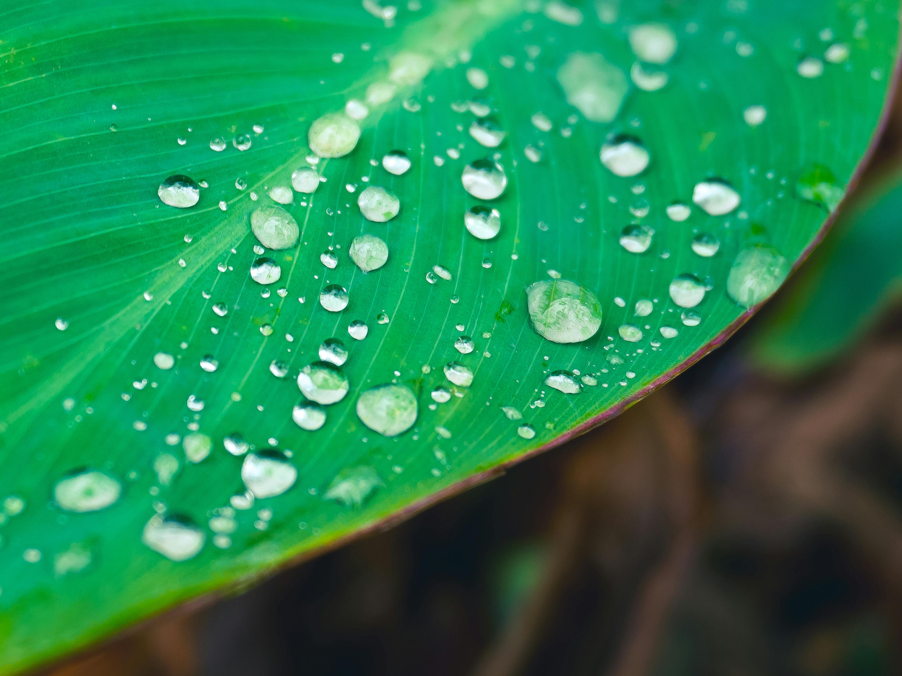
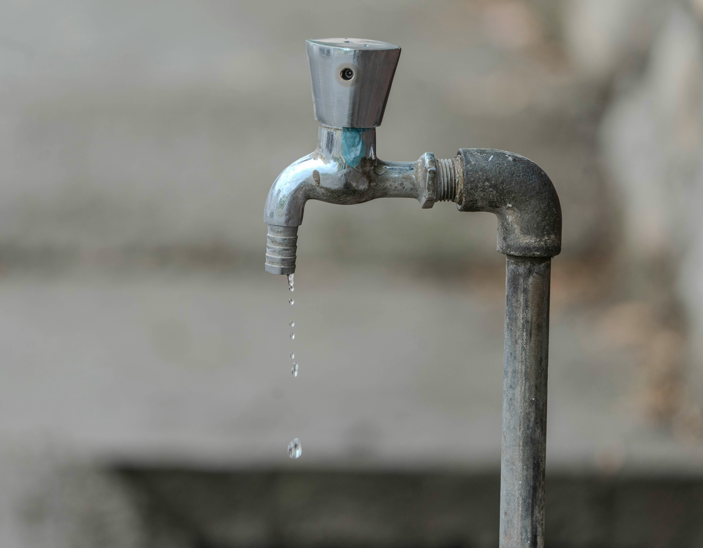
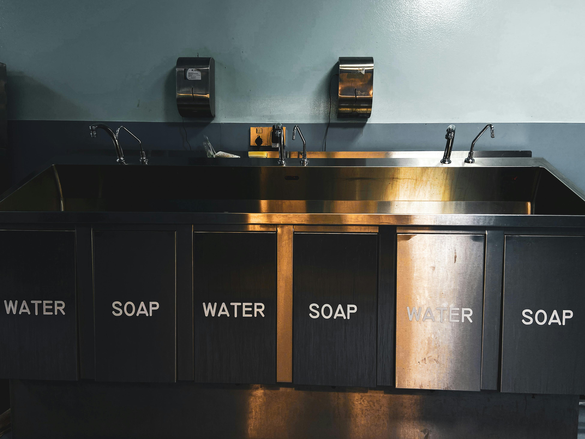

1 Water Filtration
Low-cost filters for safe drinking water
Simple household filters that remove dirt and bacteria and make water safe to drink. Unfortunately, mostly of social and economic activities contributed to water contamination, which adversely affected water quality. A water contaminant refers to any substance other than water molecules that, when present above a certain threshold, potentially cause harm to humans, animals, or the environment.
Click here to read more about importance and differences of water filters
2 Rainwater Harvesting
Rainwater collection for community use

Rainwater harvesting is an example of a primary element of integrated water management. It can play a vital role in reducing pressure on public water utilities and infrastructure, while also making cities more resilient to the effects of climate change.
Click here to read more about the role of rainwater harvesting
3 Education
Teach appropriate usage practices

Top tips to save water
- Spend less time in the shower
- Turn off the tap when brushing your teeth
- Reuse water
- Get a water butt to collect rainwater
- Fill the kettle less
- Use full loads for your washing machine and dishwasher
- Maintain your appliances
- Use the shower instead of the bath
- Use water saving devices
Click here to get more details on each of these tips
4 Handwashing Stations
Install low-cost stations to improve hygiene in schools

Schools are critical for the control and spread of many infectious diseases, including COVID-19, depending on their access to and quality of water, sanitation, and hygiene (WASH) and the implementation of WASH interventions. Water, sanitation, and hygiene are fundamental human requirements and have an impact on ensuring basic rights to decent standards of living and health
Click here to get to know more on this